A LoRA fine-tune trained on all 100 plates of Kunstformen der Natur (1899–1904), exploring what a small, tight visual domain teaches a generative model that a broad one can't — and whether it can dream up specimens Haeckel never drew, in a style he'd recognize as his own.
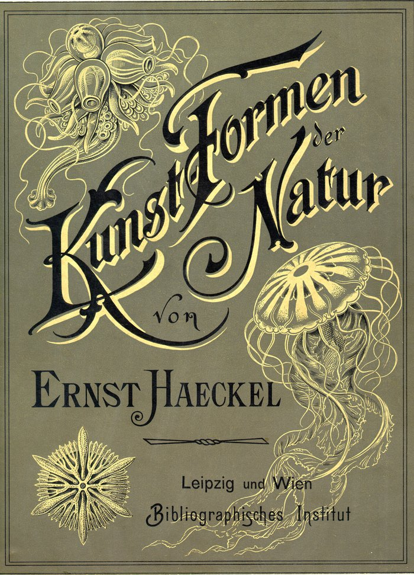
Kunstformen der Natur is public domain, ~100 plates, and every plate follows the same recipe: a single biological specimen, often radially symmetric, rendered as a lithograph on a warm cream background with fine line work and saturated earth-tone ink. That signature is strong enough that an output either looks like Haeckel or obviously doesn't — which makes a model's progress genuinely inspectable rather than a vibes-based "looks cool to me" call.
Haeckel was also drawing things — deep-sea radiolaria, siphonophores — that nobody had seen in this kind of detail before. A model that interpolates between plates should produce specimens that don't exist but feel like they could: a version of what Haeckel was doing a century earlier, only now the "field notes" are weights instead of microscope slides.
300dpi scans from the Internet Archive / BioLib.de source, verified complete: no missing or corrupt files.
Perceptual hashing across all 100 plates. Zero near-duplicates — expected, since these are 100 distinct illustrations, not a scraped photo corpus.
Every plate's own printed genus, order, and German name transcribed directly off the plate — more accurate than the ~51% Wikimedia Commons categorizes, and one of those is outright wrong.
1,102 individual specimens documented from Haeckel's own companion explanatory volume — a genuinely bug-prone pipeline (OCR page-boundary bugs, two caught LLM-fabrication incidents) with an honest incident writeup in the repo.
Rank-16 LoRA on SD1.5's UNet cross-attention (to_q/to_k/to_v/to_out.0), designed around a real 6GB VRAM ceiling: bf16 autocast, gradient checkpointing, batch size 1 + gradient accumulation.
1,250 steps on the full 100-image dataset, to validate the config before committing to a long run. Results below.
Fixed, seeded prompt sets — faithfulness (real captions vs. generated, side-by-side) and novel recombinations — so results are comparable across checkpoints.
The probe validated the setup; it did not finish converging. This is the current next step.
Haeckel drew far beyond radiolaria and jellyfish — bats, hummingbirds, orchids, antelope. The dataset's breadth is part of what makes the training probe below interesting: 100 images spread across ~90 distinct taxonomic orders is a hard generalization problem.
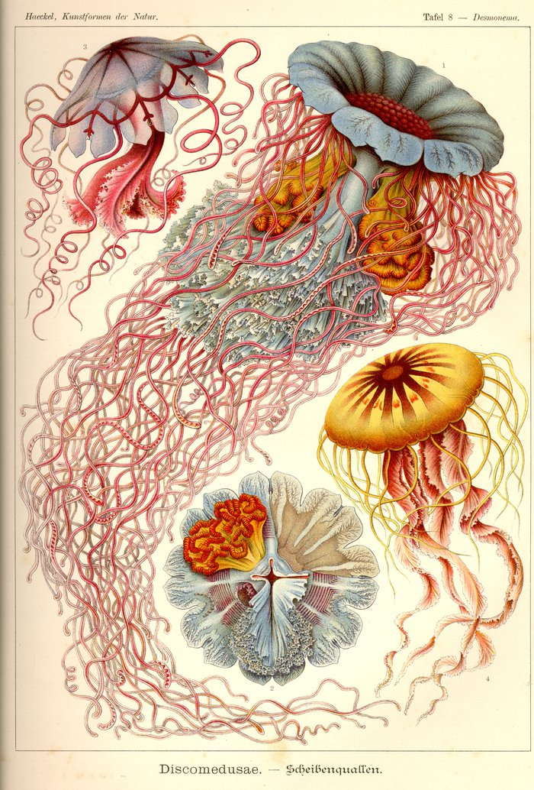
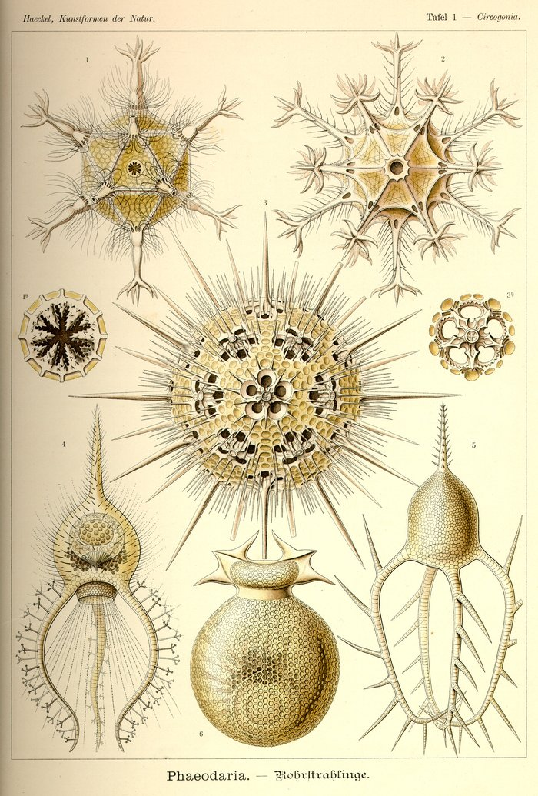
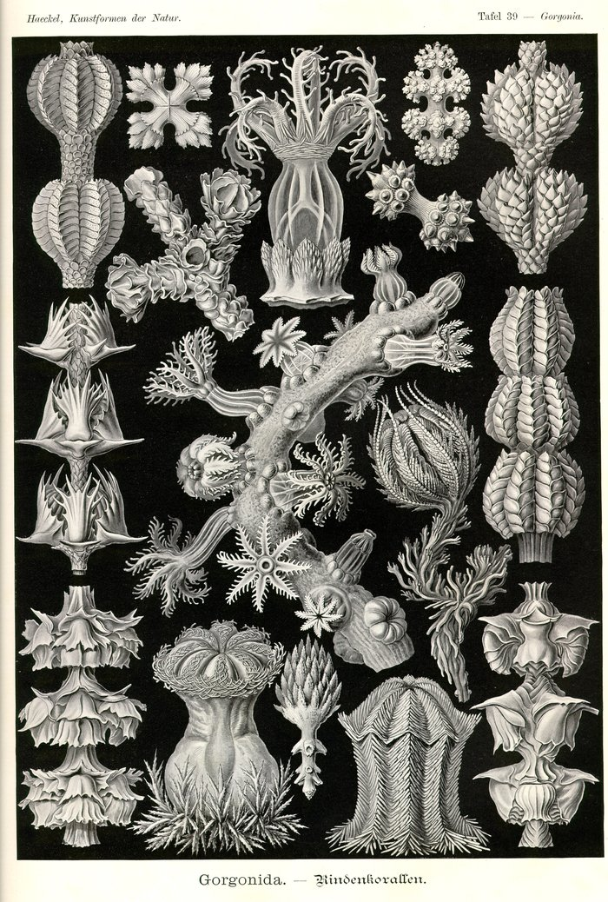
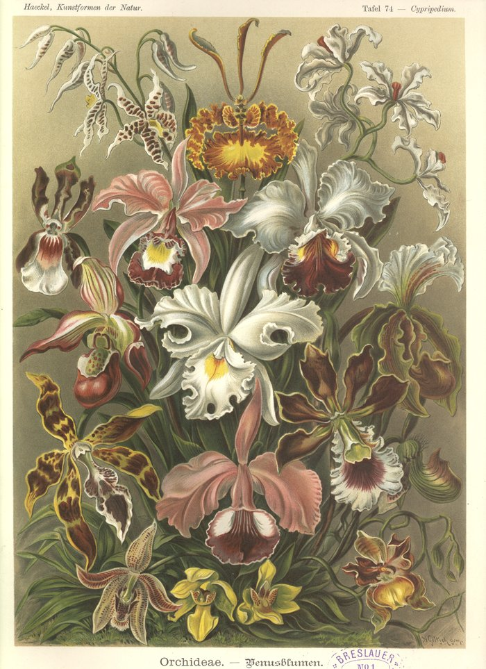
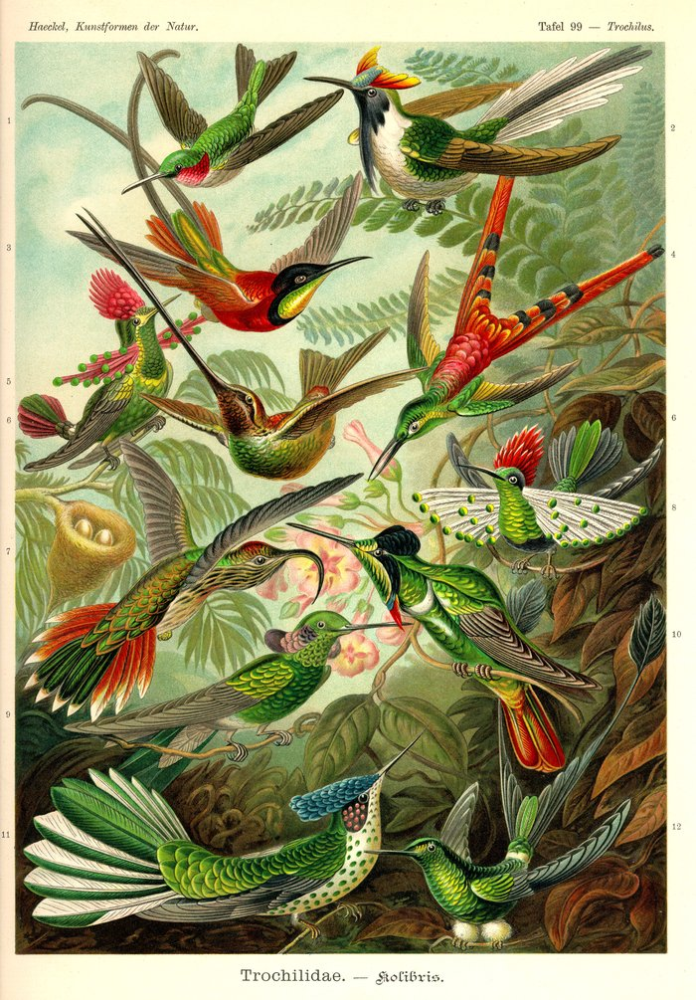
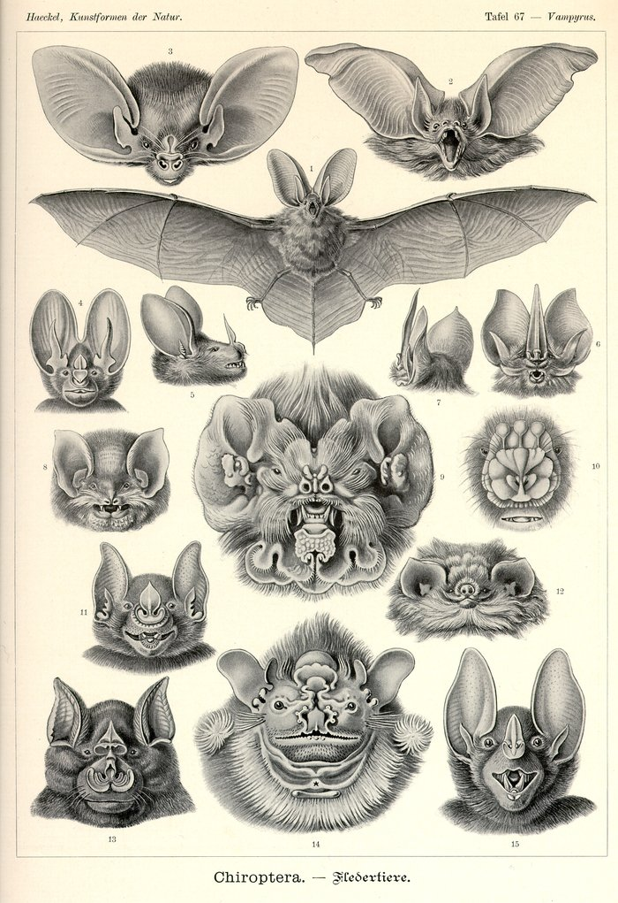
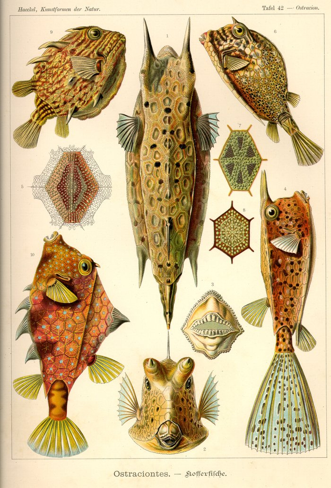
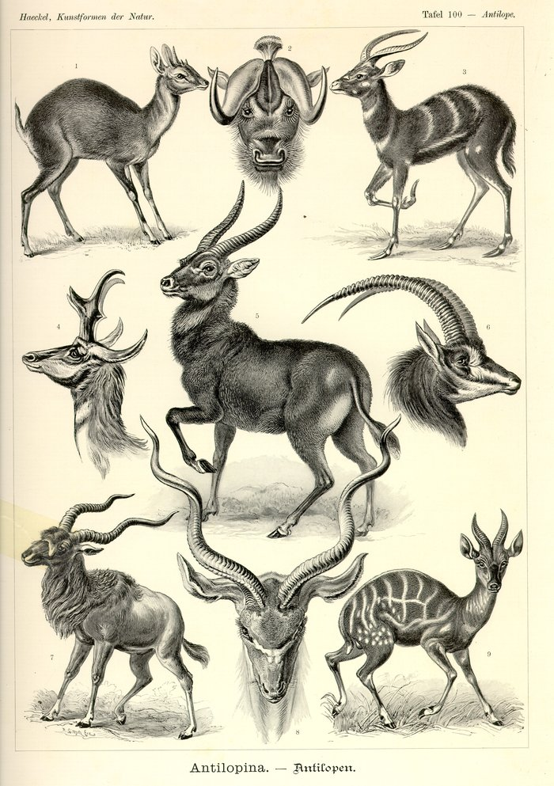
Same prompt, same seed, sampled at each checkpoint through training. The point of this probe wasn't a finished adapter — it was checking that the config actually converges before committing hours to a longer run.
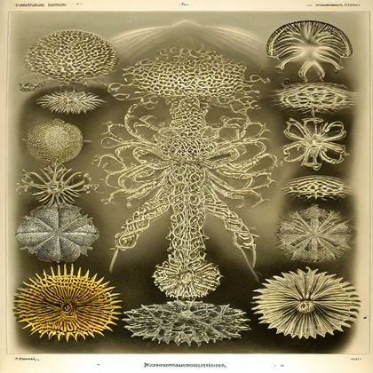
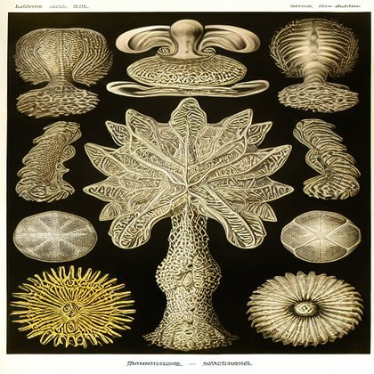
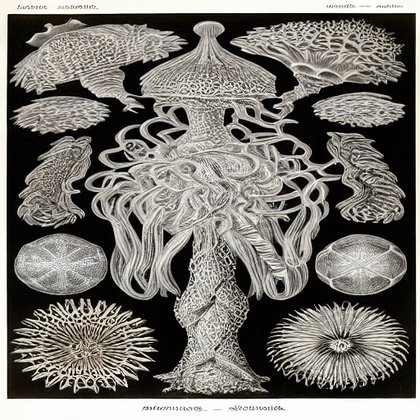
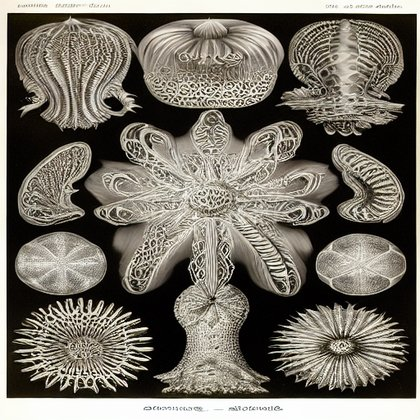
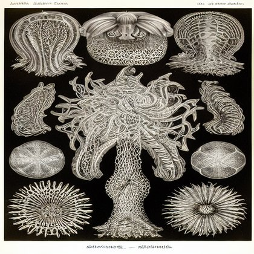
0.186 → 0.131 over 50 epochs. Diffusion MSE loss is inherently noisy per-timestep — this is the honest per-epoch curve, not smoothed to look cleaner than it is.
Real plate on the left, generated image on the right, from the exact same caption the model trained on.
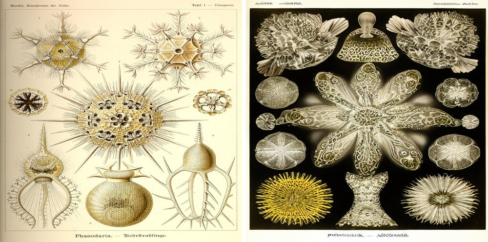
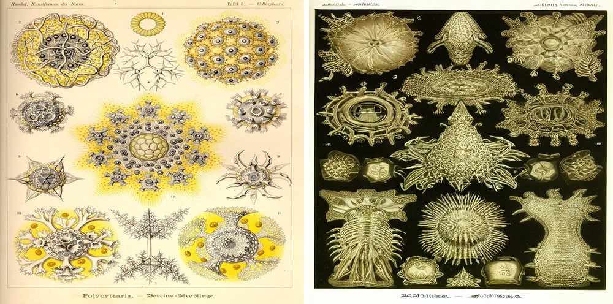
Prompts that don't exist in the training set — a genus invented within a known order, or two orders blended. No ground truth to compare against; the question is plausibility, not accuracy.
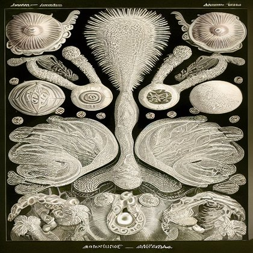
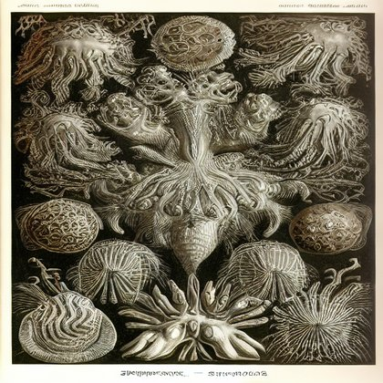
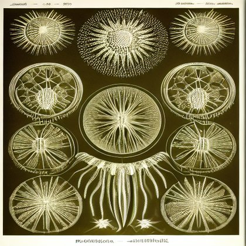
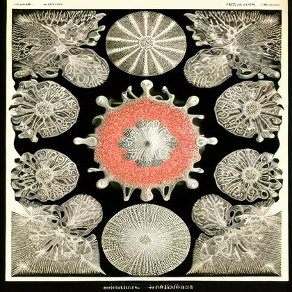
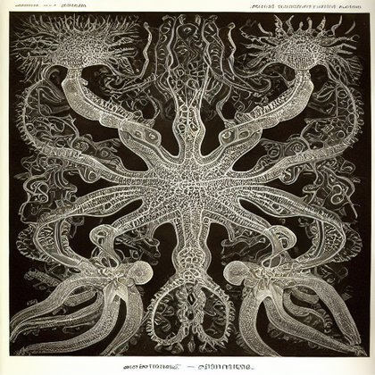
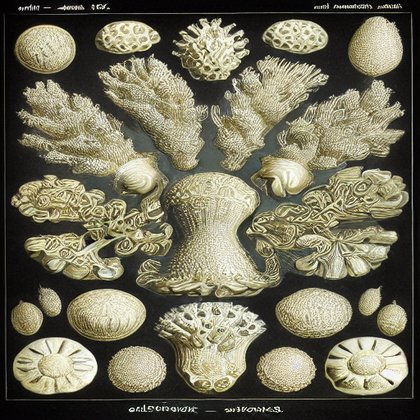